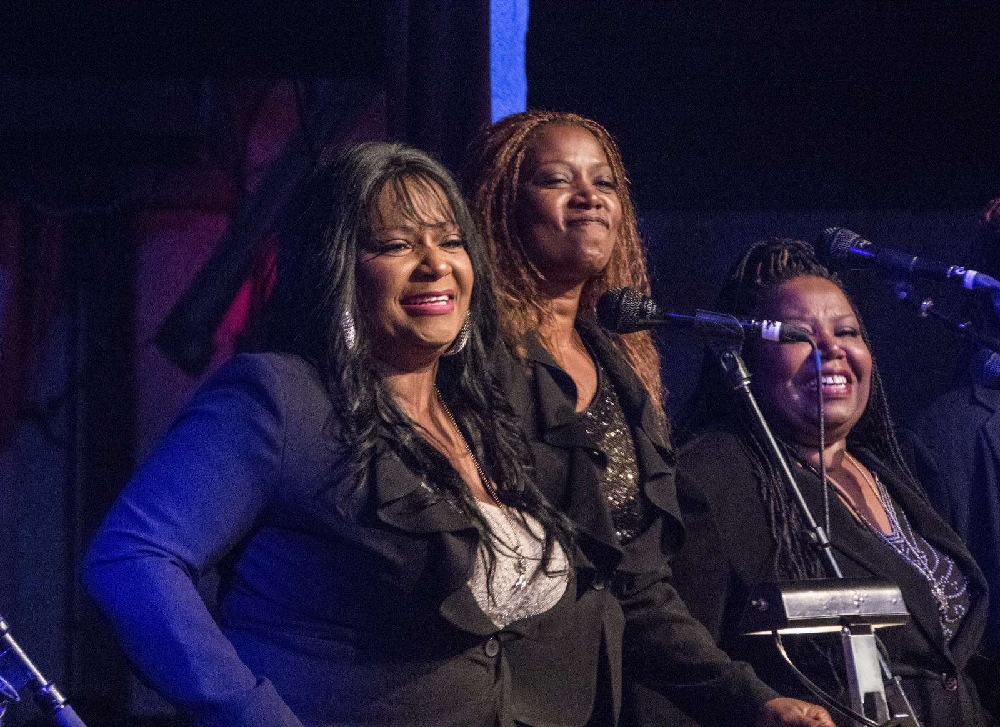
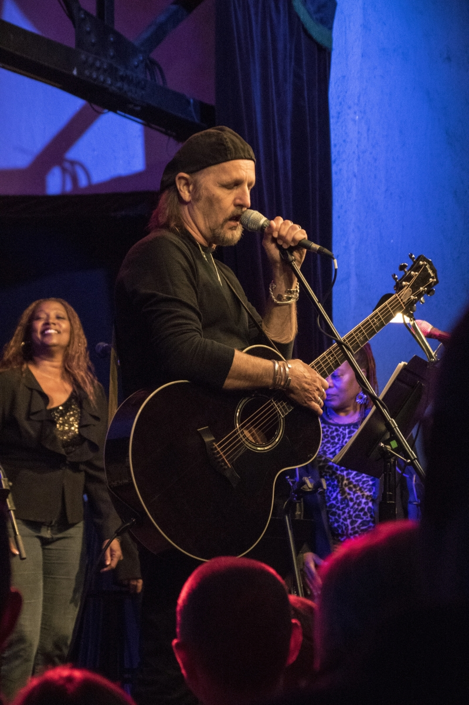
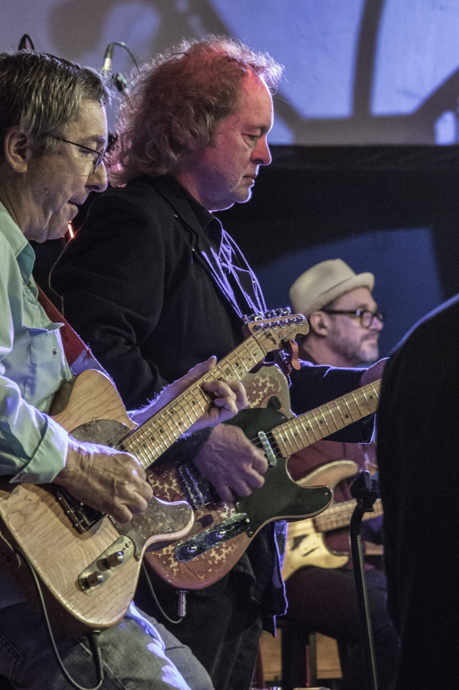
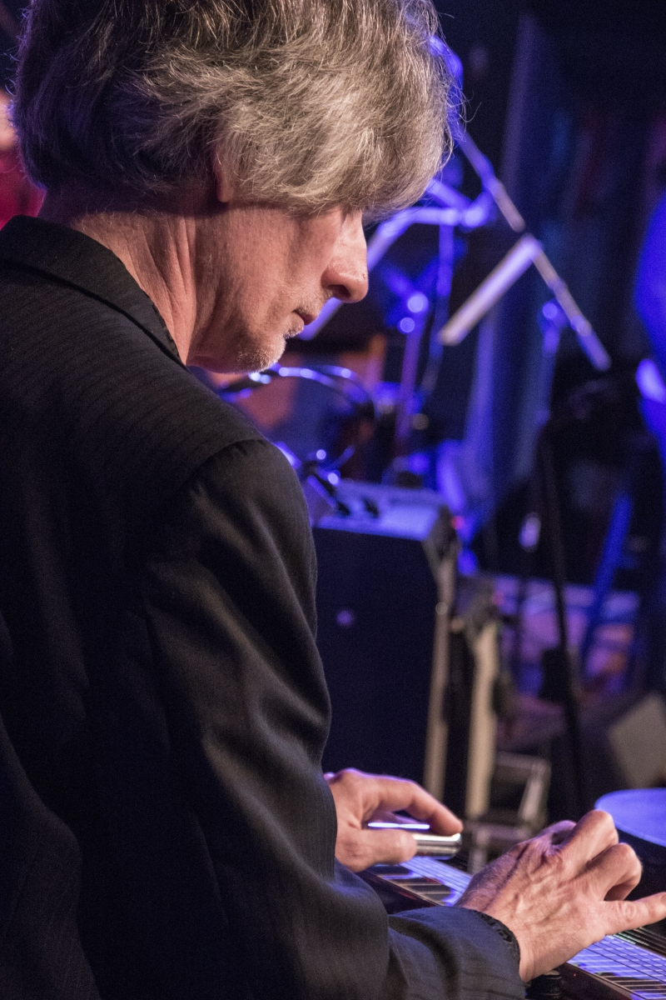
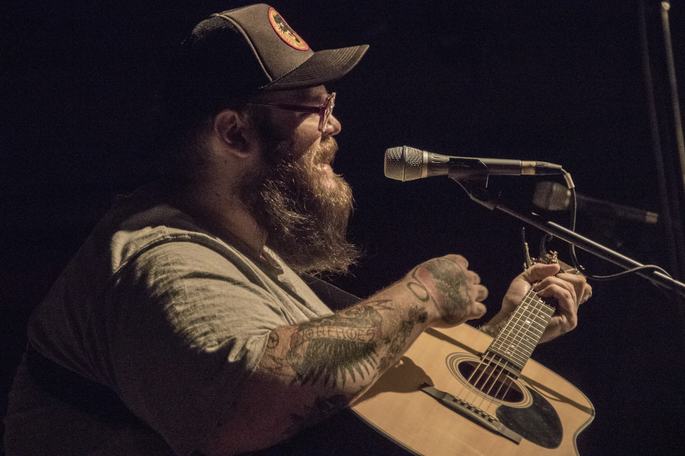
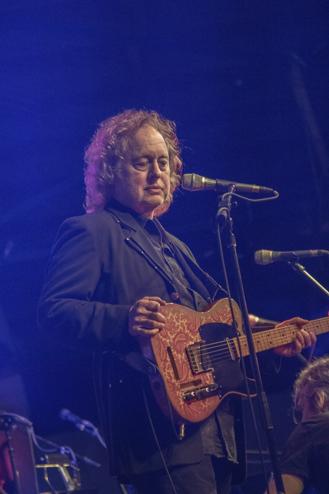
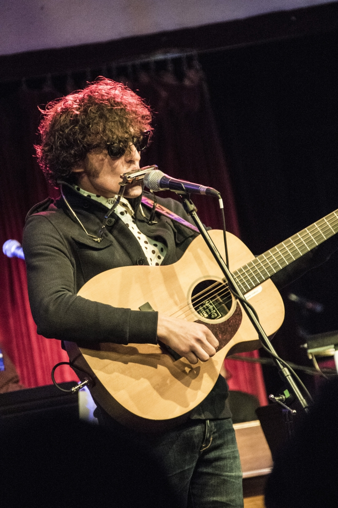
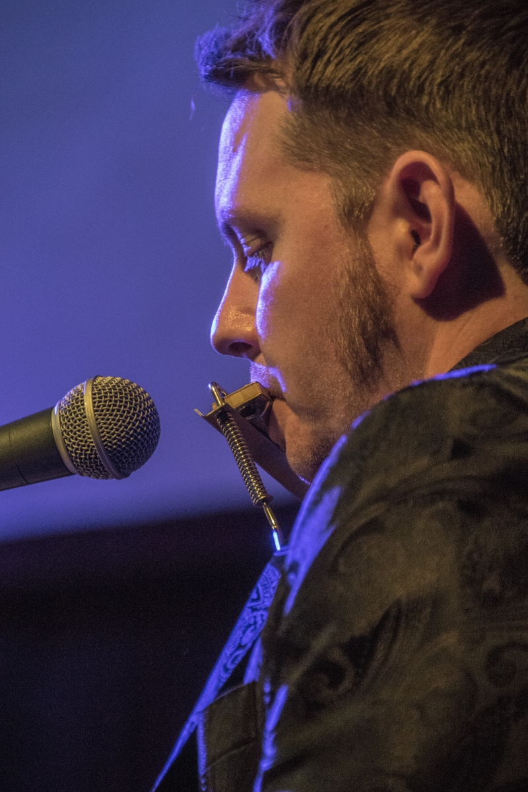
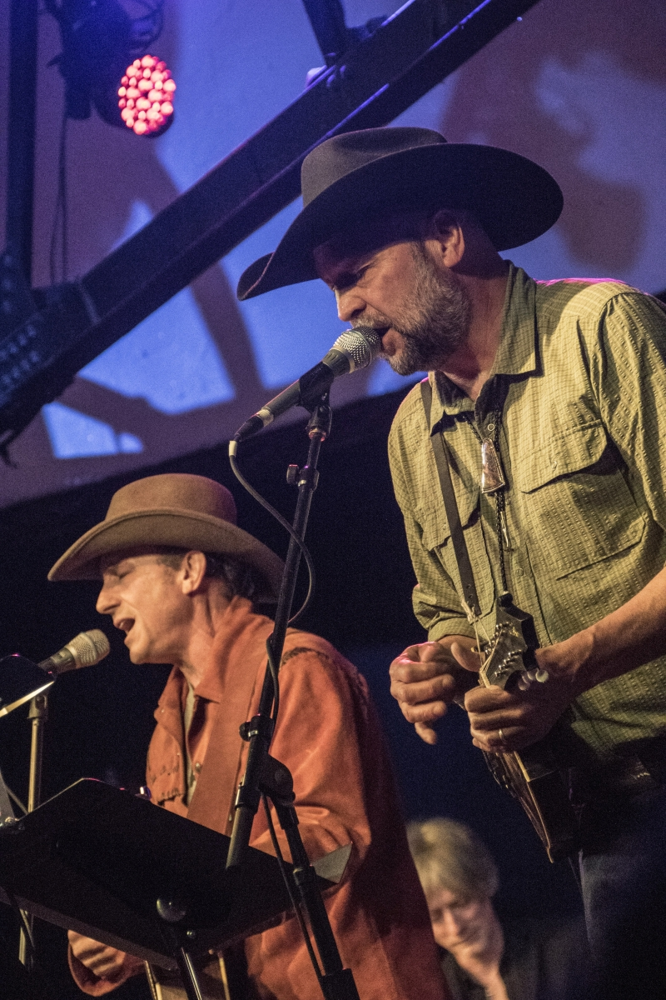

On a night like that
The inside story, potentially biased but perfectly accurate review and deep afterthought ruminations concerning the concert event known as “On A Night Like This”

Steve Ripley leads The House Band Approximately
Photos by Greg Bollinger
Disclosure: The writer is a friend and sometimes colleague of Steve Ripley, an original co-founder and long-time proponent of the Cain’s Ballroom, and a student and appreciator of all things Dylan. That said, let the completely objective journalism begin.
The announcement that the Dylan Archive would be housed in Tulsa in perpetuity was earth shattering enough. The later news that there would be a concert celebrating its arrival and showcasing some of Dylan’s songs promised a potential aftershock of significant proportions.
Soon, with a former member of Dylan’s band, Grammy-nominated recording artist and guitarist Steve Ripley, producing, and with his meticulously recruited supporting cast of a regional A-list of vocalists and a national A-list of backing musicians in tow, it was easy to let the anticipation threaten to exceed the results.
So much so that Ripley’s wife and extraordinary master of pre-production, Charlene, having read one too many of my elegiac predictions, felt compelled to warn me that I might be disappointed.
“Not to worry,” I said. And then I started worrying.
Luckily it was only a day or two later when I found myself at the first full rehearsal. Thirty seconds into the first song and it was the end of worry as we know it. I posted a few more over-the-top predictions and some urgent warnings of a show not to be missed . . . and then slept like a baby.
The show opened with an unspoken piece of poignancy. Guitar legend and beloved Tulsa music scene stalwart Steve Pryor had long been one of Steve Ripley’s go-to guys, and was slated to kick the show off. When he died in a motorcycle wreck two weeks before the event, Ripley elected not to formally fill his spot but would instead let the opening slot stand as a sort of tribute to Pryor, with Ripley and John Fullbright sharing the vocals.

This was an unannounced nod to his old friend and it gave an indescribable depth to the already hauntingly beautiful a capella opening by the gospel-infused McCrary sisters, the highly regarded vocal ensemble led by Regina McCrary, a member of the Dylan tour when Ripley joined. It also added a layer of bittersweet meaning to the song Ripley had chosen for Pryor when the band kicked into the laid back, life-goes-on tune, “Watching the River Flow.” But with much of the audience unaware of Pryor’s planned place in the show’s opening, it all came across as a gently rollicking start to the much-anticipated night.
With the private homage to Steve Pryor complete, Jimmy LaFave took the stage to sing what Ripley told me beforehand would be the “actual start to the show,” the title track of the event, so to speak, “On a Night Like This.” As an Okie expatriate living outside of Austin, LaFave is one of the most directly Dylan-inspired recording artists in the country. His discography includes two complete albums of Dylan songs and his live shows have relied heavily on Dylan covers, which he invariably infuses with subtle emotion and nuance.
LaFave was in good form and the song also served to establish the terms of engagement for the full-throated sound of the band. It was becoming clear that the players assembled for the event were strategically chosen to capture a sound that was true to some of the most beloved periods of Dylan’s live shows and recordings, even as it was infused with the unique Tulsa groove developed by the likes of Leon Russell, JJ Cale, Carl Radle, Jim Keltner and Ripley himself.

LaFave’s solo version of “Song for Woody” was a nice, early detour from the band, though, and it laid the groundwork for what would by night’s end be seen as a masterful approach by Ripley to tastefully pair the perfect vocalist to each song, then develop the ideal instrumentation and arrangement and then, finally, carve out the right spot for every song in the flow of the show. No small feat.
It was great to hear a solo acoustic song early on, especially one that evoked the special relationship between Dylan and Woody Guthrie, the two men whose archives would now reside in the same lucky town. The theory that Dylan’s great admiration for Woody played a role in Dylan’s decision to choose a home for his archives in Tulsa seemed all the more compelling when Jimmy LaFave sat on a stool playing Dylan’s tribute song to Woody. If nothing else, it was a reminder that Dylan’s decision will certainly end up introducing legions of Dylan fans to the works of his greatest inspiration.
The band rejoined LaFave to finish out his section with an upbeat version of the tender, love-lost tune, “You’re Gonna Make Me Lonesome When You Go,” closing the case on LaFave’s ability to personalize Dylan’s songs to suit himself and his followers. And, by then, the band was in full force.
The rhythm section of the group wryly dubbed by Ripley, “The House Band Approximately” was comprised of a dynamic duo from the Elvis Costello Band, Rock and Roll Hall of Famer Pete Thomas on drums, and Davey Faragher on bass, plus hometown hero Jimmy Karstein on percussion.

Keyboards and guitars were provided by John Fullbright, guitarist Terry “Buffalo” Ware and keyboard wizard Daniel Walker. Ripley, of course, also played guitar, though he yielded all the heavy lifting to Ware, given his own crushing responsibilities as producer, bandleader, arranger and vocalist. Early in the planning, he dispelled my assumption that there would be some Ripley guitar heroics in the deal when he confided in his quiet and-that’s-that voice, “Terry can handle everything we need handled on guitar.”
And that was that. Ware provided everything from the jingle jangles called for by the Byrds version of “Mr. Tambourine Man” to the signature Mike Bloomfield guitar burst on “Like A Rolling Stone.” He filled all the sonic spaces reserved for guitar heroes with great taste and impeccable tone—and no unnecessary posing—and became part of the great mid-range wall of sound created by the organ, guitars, and pedal steel.

Playing pedal steel, mandolin and fiddle was Ripley’s closest musical compadre on stage that night, the multi-instrumentalist, Fats Kaplin, who had apparently been given the name “Fats” for the simple crime of being as skinny as a tuxedoed stick figure. An elegant presence and virtuoso player, before his recent tours in Jack White’s band, Fats was part of Ripley’s alt-country band, The Tractors, and has been a friend and musical co-conspirator ever since. There were no other choices for his spot in The House Band Approximately, the group that was now welcoming to the show the second guest vocalist, JD McPherson.
For those who, like me, only knew McPherson from his Late Show appearance and various videos on YouTube, his performance would be one of the big surprises of the evening. Though I had considered McPherson a stellar rockabilly guy, I have to admit I was surprised when Ripley told me he would be entrusted with a couple of Dylan’s more treasured gems, “Girl From the North Country” and “I Shall Be Released.” The first song in McPherson’s set, “Most Likely You Go Your Way (and I Go Mine)” seemed more obvious, but as soon as he launched into that simple rock ditty, it was obvious that his rockabilly thing was just the tip of the iceberg.

Over his three-song section of the show, McPherson’s stylistic range and sheer vocal talent emerged in a way that took the concert to the next level. His solo performance of “Girl From the North Country” seemed to cover both vocal parts on the Johnny Cash/Bob Dylan version and his verses on “I Shall Be Released” rivaled even the heart-rending Richard Manuel performances of the song with The Band. It didn’t hurt that, for the background vocals, the McCrary Sisters were holding their own against the ghosts of the Staples Singers in “The Last Waltz.”
It was at this point in the show, meanwhile, that my partner in the trenches for the evening, a lifelong Dylan aficionado and a survivor of our early days at the Cain’s Ballroom, looked over from his spot beside me in the middle of the standing-room-always section of the dance floor and said, “They’re going with “I Shall Be Released” this early in the show? That’s impressive.”
He was right: Dylan followers familiar with his storied “middle period” would expect to see a concert end somewhere around a rousing rendition of the epic song. The fact that Ripley had charted a way to utilize it as an early high point spoke volumes about what was to follow.
Part of this well-conceived strategy appeared in the form of seven, single-song cameos by artists worthy of complete concerts themselves. In the first of these vignettes about to be sprinkled through the remainder of the show, the instantly charming Kristi Rose, wife of Fats Kaplin and veteran Nashville songstress, took the stage to front a beguiling arrangement of “Love Is Just a Four Letter Word.” She playfully confronted the audience with the endless dramatic twists and turns of every accusatory line in the song in a way that made eye contact with her melodramatically dangerous.

A second vignette followed with another Okie star of late night, John Moreland, fresh from his Americana Music Honors & Awards nomination for Emerging Artist of the Year, solo on acoustic guitar. Moreland’s point blank delivery was a perfect fit for the dirge-like “Going, Going Gone.” He came. He sang. He killed it. Then he was gone. The audience reeled and then roared.
Relief from the beautiful gloom came in the form of a full-band version of one of Dylan’s great blues-rock anthems, “Highway 61 Revisited”. It was the first chance to hear Ripley take the lead vocal since the opening song and it was right on time: “God said, ‘Abraham, kill me a son,’ Abe said, ‘Man, you must be putting me on.’”
Ripley looked like a man who had spent some time performing shoulder to shoulder with the original singer of this song, and he seemed mighty glad to take a shot at it. Again John Fullbright was swapping verses, but we’ll get to him soon enough.
Ripley continued with a second tribute to Steve Pryor, this time a public one. There’s a song on Shot of Love that has only recently been gaining traction as one of Dylan’s towering masterpieces. It’s as beautiful a hymn as has ever been sung and as poetic a lyric as any of Dylan’s best. And Ripley sat a few feet away from Bob Dylan when it was recorded. It’s called “Every Grain of Sand” and Ripley dedicated it to Steve Pryor.

As if to “ease the pain of Artemis” alluded to in the song, Ripley then offered up a brief glimpse into the song-writing genius of Dylan’s trippy, musing elements of his vast repertoire, unpacking “Just Like Tom Thumb’s Blues” with some phrasing and authority that was true to the master and a delight to behold: “When you’re lost in the rain in Juarez and it’s Easter too; And your gravity fails and negativity don’t pull you through . . .”
These were the kind of lyrics that deepened the Dylan mystique for fans and critics alike and gave rise to the kind of debates that will continue for centuries, a good bit of it, it should be pointed out, to be aided by the placement of the Dylan Archive in a location not so secret anymore. And Ripley delivered them in a way that hinted at his own love for word-smithing and, it seemed, his deep affection for the writer.
Now right about here, at this high point in the show, a lesser man might have opted for an intermission. But the momentum established and the ground yet to be covered left little room for small talk and less time for beer runs. And so Ripley had wisely planned for the show to carry on uninterrupted. The audience kept rocking in place as an angelic figure, a wisp of a woman in a flowing white, gauzy dress with sleeves as big as angels’ wings, glided to the center stage microphone and gently unleashed one of the most melodic and lyrically efficient opening lines in modern musical history: “Well, it ain’t no use to sit and wonder why, babe; if you don’t know by now.”
With deep Appalachian genes and a modern Nashville address, Elizabeth Cook is a spunky Sirius radio host and celebrated singer-songwriter known in both arenas as a wise and witty purveyor of life’s little joys and injustices. She brought the purest folk element of the night to the stage for stunning interpretations of two of Dylan’s love-gone-sideways masterpieces, “Don’t Think Twice, It’s Alright” and “Just Like a Woman.”
She told me before the show that she was looking forward to flipping the male point of view in these songs upside down and inside out. This noble mission was accomplished throughout, but the image that remains is the knowing glance she threw the audience from an exquisitely tilted head when she sang on the latter song, “We never did too much talking anyway.”
I think I can speak for every male member of the audience when I say, “Ouch.”
With male egos duly bruised, what better way to bounce back than with a completely whimsical Dylan song performed by three brothers named Hanson who burst onto the international stage with a bit of whimsy of their own? MMMBop, indeed. “Quinn the Eskimo” was originally a Dylan-penned hit for Manfred Mann, and it’s completely nonsensical promise is that “When Quinn the Eskimo gets here, everybody’s gonna jump for joy.”
With the Hanson Brothers in deadline mode for their own festival the next night, the arrival of the Mighty Quinn became a matter of “if” as well as “when”. But arrive they did and the lead vocal performance by Isaac Hanson and backing by Taylor and Zac reminded us once again how great these guys are. In what may be a historic first, Isaac used his cell phone as a teleprompter, which only served to add to the ridiculous joy of it all.
I hadn’t seen John Calvin Abney since he was a bat-shit crazy teenager thrashing out original songs on acoustic guitar for my younger daughter’s friends in the subterranean great room of our mid-town house. The signs of genius were already there, as were the unbridled theatrics capable of making a Rhesus monkey on crack look like a tired Las Vegas lounge singer.

I’d heard rumors that Abney’s energy had been honed through the years but our little re-union at the back of the Cain’s during rehearsals assured me that he had not lost his edge. He couldn’t wait to tell me what he had in store for the big night: he was going full Dylan, circa 1965—polka-dot shirt, Dylan shades, black jacket and boots and a glorious version of the Dylan halo of spring-loaded curls of hair. Given Abney’s perfect Dylan jawline, slender nose and piercing eyes, I was sure his outfit would fill the audience with double-takes and induce at least one full-blown hallucination. It was then I remembered why I loved this kid.
But as good as Abney’s look turned out to be, the real magic was in his performance of the iconic “Queen Jane Approximately.” I’d had no doubt he could pull off the Dylan guitar and vocals and even the Dylan attitude, all of which he did with flying colors. But the coup de grace was a harmonica solo that fully captured the sheer sonic joy of Dylan’s greatest secret weapon.
Anyone who has had the distinct pleasure of seeing John Fullbright in concert knows that if you could put the guy at the far end of a gymnasium and had him sing from the phone book, it wouldn’t be ten minutes before you’d find yourself dialing the random phone numbers he sang just to make sure the person answering the phone wasn’t having an existential crisis . . . or at least a bad day.

Seriously, if someone had just sent Fullbright into a Bernie Sanders rally a couple months ago and simply had him sing a few of Dylan’s protest songs, the revolution would be over by now and there’d be free tuition for everybody and not a single bank bigger than a QT store. He’s that compelling.
So when he stood up from his spot at the piano in the House Band Approximately and went to center stage with his guitar, people were already putting down their six-shooters and stepping away from the bar. As he belted out the opening line to “My Back Pages,” the impossible happened: the Cain’s fell silent. And it remained silent for a full three verses and three trips through those immortal words of the lilting chorus, “Ah, but I was so much older then, I’m younger than that now.”
Even when the spell was broken and the inevitable chatter of the saloon patrons and dance hall girls started to creep back in during the fourth verse, the record for a silent crowd at the Cain’s had been shattered. If you don’t believe me, look it up in the Guinness Book of World Records. It’s not even close.
In the arc of Steve Ripley’s career, long before there was a Dylan performance stint, there was a long apprenticeship/fly-on-the-wall relationship with Leon Russell. Leon’s brilliant, groove-based approach to recording some of Dylan’s seminal songs are among some of the most important cross pollinations in middle period rock. So it was no surprise when John Fullbright went back to the piano and proceeded to bang out some Leon-inspired piano in, “It Takes A Lot To Laugh, It Takes a Train to Cry.”
The musical high points of Fullbright’s contributions to the evening are too numerous to mention but for pure charming delight, his duet with his girlfriend, Angélica Baca, wins the sweepstakes outright. Sharing a single mic and swapping inside jokes and physical jabs all along the way, they still managed to convert “One More Cup of Coffee” into a sorrow-tinged rendezvous in a dimly lit café in real time.
The perfect segue had Monica Taylor singing a more hopeful twist on the romantic possibilities of two ships passing in the night via the lightly lilting, “I’ll Be Your Baby Tonight”. It was the simplest band arrangement of the night, perfect for the ode to romantic innocence delivered by Taylor, flawless voice and fetching style on full display.

In the epitome of Ripley’s genius knack for pairing the right artists to the perfect song, his choice of “Mr. Tambourine Man” for the beloved Red Dirt Rangers set the stage for one of the best received songs of the night. Just as The Byrds’ vocally lush version of the song was an easy point of entry to the rock and roll side of Dylan in the early days, the combination of The House Band Approximately and the Red Dirt vocal triumvirate of Brad Piccolo, John Cooper and Ben Han made for a wonderfully accessible moment of joy for everyone involved.
And it also started the build to the final climax of the show. The band was now hitting on all cylinders. Ripley later said it like this: “Fats was just playing this amazingly thick rock and roll—I mean, his Jack White deal was coming through and it was just swirling around with the organ and it was all just making my ears bleed but it was so great.” And with a groove on “Maggie’s Farm” that had spontaneously emerged from drummer Pete Thomas and bassist Davey Faragher in rehearsal, the McCrary Sisters were defiantly wailing, “We ain’t gonna work on Maggie’s farm no more,” and Ripley and Fullbright were trading verses with J.D. McPherson and Jimmy LaFave while the sound just kept swirling.
And just when the music seemed like it could not possibly be rendered more magically powerful, Fats Kaplin, stood up from his pedal steel station and walked over to a bizarre stainless steel contraption dangling in mid-air and proceeded to evoke sound from it by what looked like force of sheer will. With his upright posture and dead-pan persona mashing up Nicola Tesla with Harry Houdini, the unflappable Fats—actually an accomplished magician himself—held his hands in precise positions some five to ten inches away from the metal and started producing notes from the ethereal realm. It was the rare instrument known as the Theremin—first heard in most of our lives on Brian Wilson’s Beach Boys masterpiece, “Good Vibrations”—and it was by then sending impossibly beautiful and high-pitched electric frequencies into the thundering stratosphere of Dylan’s arguably most famous rock anthem, “All Along the Watchtower,” building to a controlled mayhem climax of instruments and voices.
“No reason to get excited . . .?”
That’s easy enough for the Joker to say to the Thief, but by the final refrain, it was simply out of the question for the audience.
As the song roared to a finish I couldn’t help but be amazed at what was suddenly so evident: the lyrically based rock music pioneered in great part by Bob Dylan was indeed still one of the most relevant music forms ever invented. All a guy had to do was pull it out of the archives of his own past or—looking forward a hundred years—the Archive of some museum in Tulsa and bring it to life with a new generation of inspired musicians and vocalists.
“Well, then,” I thought. “This evening is a profound success.”
And the rest was a coda, a victory lap, a gentle reflection in the aftermath of the storm. And, why not, a celebratory refrain for good measure.
It began with a lesser known but serenely beautiful passage at the end of “All the Tired Horses” that asked, over and over again, “All the tired horses in the sun; how you gonna get any riding done?” The McCrary Sisters were bringing comfort and benediction in four-part harmonies coalesced around a melody that began to be transformed ever so slowly into the deeply familiar melody of “Knocking on Heaven’s Door.”
Nothing but humming and “ooohs” from the singers repeated that achingly lovely melody for what may as well have been a hundred years. When I first heard it in a rehearsal I was seated on the middle of the floor of the Cain’s almost alone, holding back most of the tears until I realized I was literally pondering the logistics for having the McCrary Sisters surround the hospital bed in my final hours.
I still am. Hey, it could work.
But at the end of the concert, the song was moving into the verses: “Momma take this badge off of me; I can’t use it anymore.”
And soon the whole place was singing “knock, knock, knocking on heaven’s door.” It was impossible not to think about Steve Pryor. About David Bowie. About Prince. About family and friends without famous names. About each other. About ourselves. By the time the song ended and Ripley made one of his only comments of the night, it seemed like it was already after the fact. “Hey,” he said. “Let’s go to church.”
.jpg)
But for those not already there, the McCrary Sisters a cappella opening to “Blowin’ in the Wind” was a gentle invitation to take stock of things, with or without a pew. “How many roads must a man walk down?”
And like a movie we’d sat through in the afternoon matinee, this was where we came in. But you always want to watch a little of it again. “The answer, my friend, is blowin’ in the wind, the answer is blowin’ in the wind.”
The lyrical foundation for the best of all the great rock music to follow was folk music, early Dylan music, Woody Guthrie music. Music asking all the right questions. And so ended the concert.
Good stuff, there’s no denying it. But after all is said and done you know the band is going to come out for an encore. And if it’s one of those Dylan shows you always wanted to see, someone up there on stage is going to want to know:
“HOW DOES IT FEEL?”
As every breathing body in the Cain’s seemed to join the encore song, “Like a Rolling Stone,” to weigh in on the ultimate existential question of rock music as posed by what will perhaps be regarded as Dylan’s greatest song, I had to say, it feels pretty good.
In fact, after watching some part of Dylan’s heart and soul spend the evening at the Cain’s, courtesy of his old band mate in the red Converse sneakers and a host of dedicated, gifted players and singers, I don’t mind telling you, it feels just great.
.jpg)
.jpg)